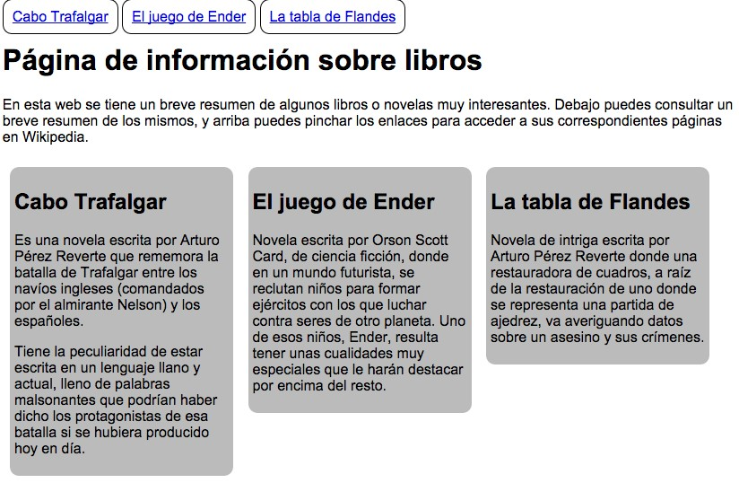
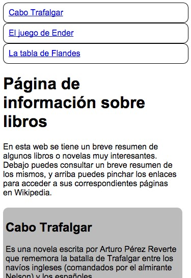
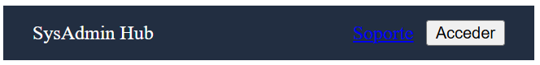
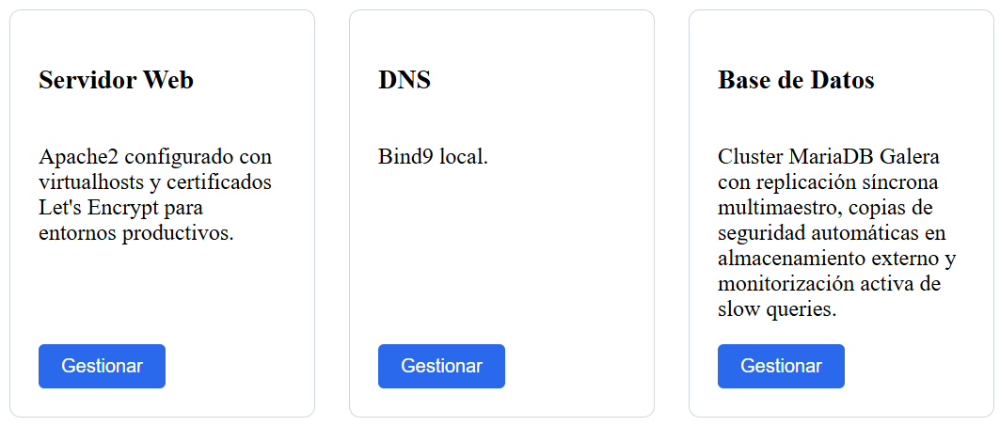
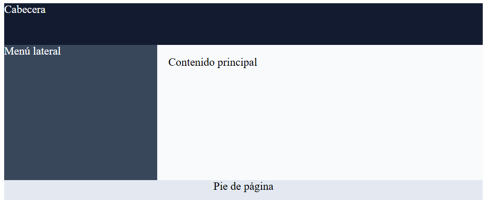
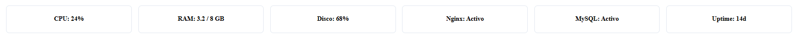
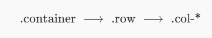
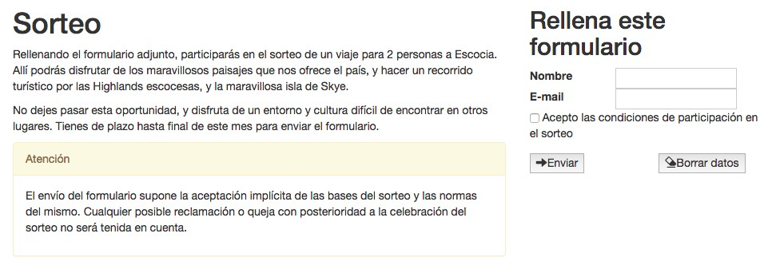

Maquetació responsiva pura (Flexbox, CSS Grid) i desenvolupament d'interfícies modernes amb Bootstrap 5.3 Maquetación responsiva pura (Flexbox, CSS Grid) y desarrollo de interfaces modernas con Bootstrap 5.3
Implantació d'Aplicacions Web (IAW) — 2n ASIR · Bloc 2: Disseny Web Implantación de Aplicaciones Web (IAW) — 2º ASIR · Bloque 2: Diseño Web
El Disseny Web Adaptatiu (RWD) és la tècnica de desenvolupament que garanteix que un lloc web s'adapte harmònicament a la resolució, mida de pantalla i orientació de qualsevol dispositiu (des d'un rellotge o smartphone fins a monitors 4K), sense duplicar el codi HTML. El Diseño Web Adaptativo (RWD) es la técnica de desarrollo que garantiza que un sitio web se adapte armónicamente a la resolución, tamaño de pantalla y orientación de cualquier dispositivo (desde un smartphone hasta monitores 4K), sin duplicar el código HTML.
<meta name="viewport" content="width=device-width, initial-scale=1.0">. Obliga el navegador mòbil a renderitzar a la seua amplada física real i no amb un zoom artificial de 980px.
<meta name="viewport" content="width=device-width, initial-scale=1.0">. Obliga al navegador móvil a renderizar a su anchura física real y no con un zoom artificial de 980px.
Ús d'unitats relatives (%, rem, fr) en lloc de mides estàtiques rígides en píxels, i regles com img { max-width: 100%; height: auto; }.
Uso de unidades relativas (%, rem, fr) en lugar de medidas estáticas rígidas en píxeles, y reglas como img { max-width: 100%; height: auto; }.
Condicions de full d'estils (@media (min-width: 768px) { ... }) que apliquen regles específiques quan la pantalla supera o baixa d'un determinat punt de tall (breakpoint).
Condiciones de hoja de estilo (@media (min-width: 768px) { ... }) que aplican reglas específicas cuando la pantalla supera o baja de un determinado punto de corte (breakpoint).
Crea una pàgina de ressenyes de llibres que en pantalles grans (min-width: 750px) mostre un menú horitzontal i llibres en columnes paral·leles, mentre que en mòbils (< 750px) el menú passe a vertical i les columnes s'apilen una sota l'altra.
Crea una página de reseñas de libros que en pantallas grandes (min-width: 750px) muestre un menú horizontal y libros en columnas paralelas, mientras que en móviles (< 750px) el menú pase a vertical y las columnas se apilen una bajo la otra.


| Tecnologia | Model Mental | Punts FortsPuntos Fuertes | Cas d'Ús IdealCaso de Uso Ideal |
|---|---|---|---|
| Flexbox (CSS) | 1D (Unidimensional) Només files O columnes |
Distribució d'espai interior, alineació vertical perfecta (align-items: center), canvis d'ordre.Distribución de espacio interior, alineación vertical perfecta (align-items: center), cambios de orden. |
Navbars, botons interns de cards, formularis en línia.Navbars, botones internos de cards, formularios en línea. |
| CSS Grid | 2D (Bidimensional) Files I columnes alhora |
Estructures globals, graelles fluides amb minmax(), àrees semàntiques (grid-template-areas).Estructuras globales, rejillas fluidas con minmax(), áreas semánticas (grid-template-areas). |
Layout complet de l'app (sidebar + header + main), galeries de mètriques.Layout completo de la app (sidebar + header + main), galerías de métricas. |
| Bootstrap 5.3 | Sistema de 12 columnes Mobile-First basat en Flexbox |
Velocitat de desenvolupament, components preconstruïts accesibles, estandardització empresarial.Velocidad de desarrollo, componentes preconstruidos accesibles, estandarización empresarial. | Panells d'administració, aplicacions de gestió corporatives.Paneles de administración, aplicaciones de gestión corporativas. |
Crea una barra de navegació amb el logotip a l'esquerra i a la dreta un enllaç de suport i un botó de login amb 10px d'espaiat emprant justify-content: space-between.
Crea una barra de navegación con el logo a la izquierda y a la derecha un enlace de soporte y un botón de login con 10px de espaciado empleando justify-content: space-between.

Aconsegueix que 3 targetes tinguen la mateixa alçària i que el botó d'acció quede sempre clavat al fons mitjançant la tècnica margin-top: auto en l'eix flex vertical.
Consigue que 3 tarjetas tengan la misma altura y que el botón de acción quede siempre fijado al fondo mediante la técnica margin-top: auto en el eje flex vertical.

Estructura una aplicació amb capçalera completa (60px), barra lateral (220px), contingut principal i peu de pàgina (40px) emprant grid-template-areas.
Estructura una aplicación con cabecera completa (60px), barra lateral (220px), contenido principal y pie de página (40px) empleando grid-template-areas.

Mostra 6 caixes de mètriques de servidor (CPU, RAM, Disc) que es reorganitzen automàticament de 4 a 2 i 1 columna mitjançant repeat(auto-fit, minmax(200px, 1fr)).
Muestra 6 cajas de métricas de servidor (CPU, RAM, Disco) que se reorganizan automáticamente de 4 a 2 y 1 columna mediante repeat(auto-fit, minmax(200px, 1fr)).

Perquè el sistema de graella de Bootstrap funcione correctament, cal respectar rigorosament aquest ordre d'anidament: Para que el sistema de rejilla de Bootstrap funcione correctamente, debe respetarse rigurosamente este orden de anidamiento:
.container / .container-fluid
L'embolcall exterior. Fixa l'amplada màxima segons la pantalla, centra el contingut i afegeix el padding lateral de seguretat. El contenedor exterior. Fija la anchura máxima según la pantalla, centra el contenido y añade el padding lateral de seguridad.
.row
La fila flexbox. Només pot contindre directament elements de tipus columna (.col-*). Aplica marges negatius per a compensar el padding.
La fila flexbox. Solo puede contener directamente elementos de tipo columna (.col-*). Aplica márgenes negativos para compensar el padding.
.col-{breakpoint}-{mida}
Les columnes de contingut. La suma de mides en una mateixa fila ha de totalitzar 12 per a cobrir el 100% de l'ample disponible. Las columnas de contenido. La suma de tamaños en una misma fila debe totalizar 12 para cubrir el 100% del ancho disponible.

Aquest arxiu conté la implementació completa dels 4 exercicis de reixeta: suma exacta de 12 (Ex 6), comportament multipantalla mòbil/tablet/escriptori (Ex 7), columnes automàtiques igualades (Ex 8) i buits de centrat mitjançant desplaçament offset (Ex 9).
Este archivo contiene la implementación completa de los 4 ejercicios de rejilla: suma exacta de 12 (Ex 6), comportamiento multipantalla móvil/tablet/escritorio (Ex 7), columnas automáticas igualadas (Ex 8) y huecos de centrado mediante desplazamiento offset (Ex 9).
Bootstrap està dissenyat seguint l'estratègia Mobile-First: els estils es defineixen primer per a la pantalla més xicoteta i s'amplien mitjançant media queries amb min-width:
Bootstrap está diseñado siguiendo la estrategia Mobile-First: los estilos se definen primero para la pantalla más pequeña y se amplían mediante media queries con min-width:
| Breakpoint | Infix de classe | Dimensions de pantalla | Dispositiu típic |
|---|---|---|---|
| Extra small | Cap (col-*) | < 576 px | Smartphones en verticalSmartphones en vertical |
| Small | sm |
≥ 576 px | Mòbils en apaïsat (horitzontal)Móviles en apaisado (horizontal) |
| Medium | md |
≥ 768 px | Tauletes (tablets) en verticalTablets en vertical |
| Large | lg |
≥ 992 px | Portàtils i pantalles d'escriptoriPortátiles y pantallas de escritorio |
| Extra large | xl |
≥ 1200 px | Monitors de sobretaula gransMonitores de sobremesa grandes |
| Extra extra large | xxl |
≥ 1400 px | Monitors ultrawide i pantalles 4KMonitores ultrawide y pantallas 4K |
col-md-6, aquesta regla s'aplicarà a md, lg, xl i xxl automàticament, llevat que especifiquem una regla superior (per exemple, col-md-6 col-lg-4). En pantalles inferiors (< 768px), ocuparà el 100% (col-12) per defecte.
Regla de herencia ascendente: Si definimos col-md-6, esta regla se aplicará a md, lg, xl y xxl automáticamente, a menos que especifiquemos una regla superior (por ejemplo, col-md-6 col-lg-4). En pantallas inferiores (< 768px), ocupará el 100% (col-12) por defecto.
.form-label
Etiqueta amb espaiat inferior òptim.Etiqueta con espaciado inferior óptimo.
.form-control
Inputs i textareas estilitzats a l'ample complet.Inputs y textareas estilizados a ancho completo.
.form-select
Desplegables amb fletxa personalitzada.Desplegables con flecha personalizada.
.form-check-input
Checkboxes i radios amb disseny homogeni.Checkboxes y radios con diseño homogéneo.
Crea exemple_Bootstrap.html distribuint la pantalla en dues columnes: l'esquerra (8 columnes) conté un text explicatiu i un panell d'alerta (warning); la dreta (4 columnes) integra un formulari de registre amb botons de submit i reset amb icones de Bootstrap.
Crea exemple_Bootstrap.html distribuyendo la pantalla en dos columnas: la izquierda (8 columnas) contiene un texto explicativo y un panel de alerta (warning); la derecha (4 columnas) integra un formulario de registro con botones de submit y reset con iconos de Bootstrap.

El component estrella per a encapsular continguts modulars. Disposa de subelements clars: El componente estrella para encapsular contenidos modulares. Dispone de subelementos claros:
.card-header : Capçalera de la targeta..card-body : Cos amb padding integrat..card-title & .card-text : Jerarquia tipogràfica..card-footer : Zona inferior per a accions o metadades.Components de senyalització i navegació contextual: Componentes de señalización y navegación contextual:
.badge.text-bg-* : Insígnies de comptador o estat..breadcrumb : Rastre de molles de pa jeràrquiques..alert.alert-* : Notificacions visuals per a l'usuari.i.bi.bi-* : Més de 2.000 icones vectorials de Bootstrap Icons.Pots obrir directament cadascun dels codis d'exemple i solucions preparades per a aquest tema: Puedes abrir directamente cada uno de los códigos de ejemplo y soluciones preparadas para este tema:
| Exercici | Arxiu | Tècnica Clau | Acció |
|---|---|---|---|
| Ex 01-A | 01responsiveLlibres_memu_normal.html |
Media Queries manuals (750px) i justificació d'enllaços.Media Queries manuales (750px) y justificación de enlaces. | Obrir |
| Ex 01-B | 01esponsiveLlibres_menu_hamburguesa.html |
Menú hamburguesa responsive amb Bootstrap 5.3.Menú hamburguesa responsive con Bootstrap 5.3. | Obrir |
| Ex 02 | ejercicio2_flexbox_navbar.html |
Flexbox 1D: Barra amb logo a l'esquerra i accions a la dreta.Flexbox 1D: Barra con logo a la izquierda y acciones a la derecha. | Obrir |
| Ex 03 | ejercicio3_flexbox_cards.html |
Flexbox 1D: Targetes amb botó ancorat al fons (margin-top: auto).Flexbox 1D: Tarjetas con botón anclado al fondo (margin-top: auto). | Obrir |
| Ex 04 | ejercicio4_grid_layout.html |
CSS Grid 2D: Layout de panell amb grid-template-areas.CSS Grid 2D: Layout de panel con grid-template-areas. | Obrir |
| Ex 05 | ejercicio5_grid_metricas.html |
CSS Grid 2D: Galeria amb repeat(auto-fit, minmax(200px, 1fr)).CSS Grid 2D: Galería con repeat(auto-fit, minmax(200px, 1fr)). | Obrir |
| Ex 06-09 | ejercicios_6_al_9_grid_bootstrap.html |
Reixeta Bootstrap 5: suma de 12, multipantalla, auto i offsets.Rejilla Bootstrap 5: suma de 12, multipantalla, auto y offsets. | Obrir |
| Ex 10 | exemple_Bootstrap.html |
Pàgina completa amb reixeta (8+4), alertes, formulari i botons.Página completa con rejilla (8+4), alertas, formulario y botones. | Obrir |
| Menús | tema5_menusBootstrap.html |
Exemples de barres de navegació responsives amb dropdowns.Ejemplos de barras de navegación responsivas con dropdowns. | Obrir |